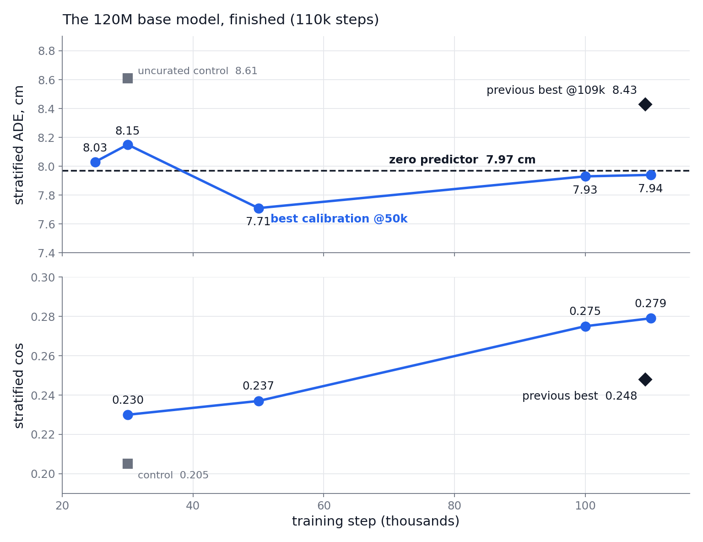
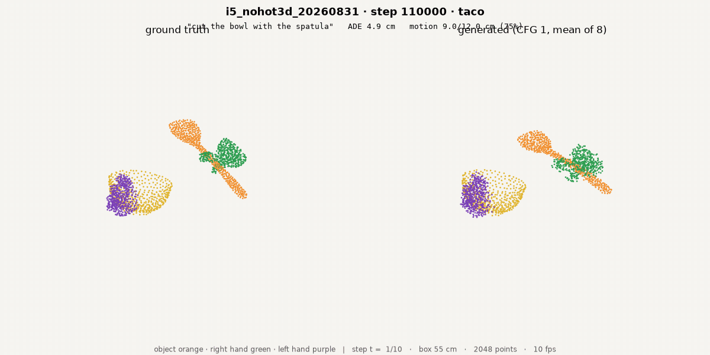
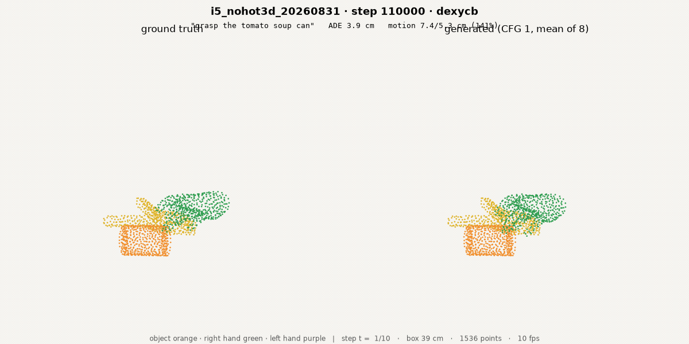
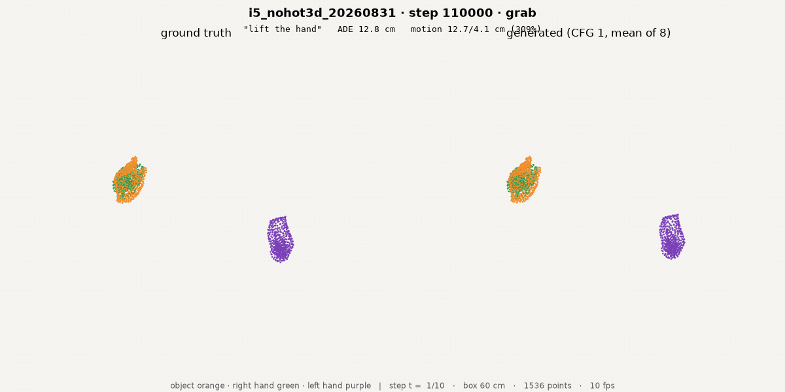

Overview
[TL;DR] The 120M base beat everything; 320M is live; rollout drift measured.
- Done: base final, beats zero
- Live: 320M ± robot data
- New: drift, contact, feasibility


all numbers: stratified six-dataset val, 576 chunks · full campaign detail: ~/3d-wam/P-SERIES.md · deck #8 = how the evaluation was fixed
Results
- The 120M base model, finished
- beats zero: 7.94 vs 7.97
- beats previous best everywhere
- The 320M generation, first hours
- New measurements for closed-loop
| final (110k steps) | cos | hand cos | ADE cm | zero |
|---|---|---|---|---|
| base, curated data | 0.279 | 0.373 | 7.94 | 7.97 |
| previous best (uncurated, 109k) | 0.248 | 0.337 | 8.43 | 7.97 |
| base @50k (best calibration) | 0.237 | 0.324 | 7.71 | 7.97 |
| uncurated control @110k — eval pending | finished training 14:47; first eval attempt (12:29) raced the still-running job → resubmit | |||



finding: cos rises to the very end (0.237→0.279 over 50k→110k) but ADE bottoms at 50k — direction and calibration peak at different times; checkpoint choice depends on the consumer
Rollout gallery · replan-from-truth vs chained-from-itself
Same episode, same model — only the replanning source differs.


finished base model (110k) · full episodes, chunk = 1 s · top row re-observes truth each chunk (the closed-loop regime); bottom row feeds itself (open-loop) · owner eye-verification requested — sources: results/iroll/i5_110k_{teacher,ar}/ · 12 more episode pairs in the pulled set
Appendix · finished base model, one clip per dataset (fresh, 110k)





renderer scripts/viz_vdit_c.py · sources: results/iviz/i5_110k/clips/ (mp4 + poster jpg alongside each gif) · owner eye-verification requested (with the deck-#8 pair clips still pending)